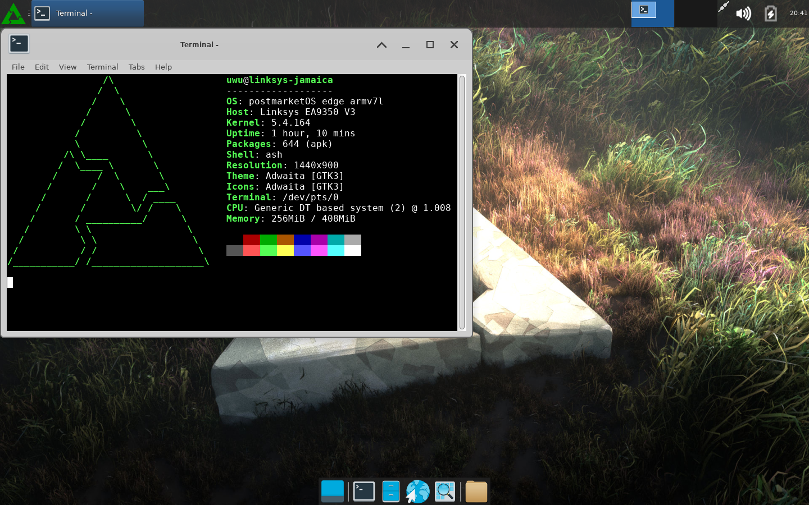

Linksys EA9350 V3 (linksys-jamaica)
| This rotuer use Unmanaged NAND so pm os cant run on it's internal storage.However it can boot pm os from usb stick. |
|
 Xfce4 running on it with USB GPU | |
| Manufacturer | Linksys |
|---|---|
| Name | EA9350 V3 |
| Codename | linksys-jamaica |
| Released | 20XX |
| Category | testing |
| Original software | Linux |
| Hardware | |
| Chipset | Qualcomm IPQ5018 |
| CPU | Dual-core Cortex-53 |
| Storage | 256MB Raw NAND |
| Memory | 0.5GB |
| Architecture | ARMv7 |
| Type | Router |
{kind=link}
| Flashing |
Broken
|
|---|---|
| WiFi |
Broken
|
| FDE |
Broken
|
| Mainline | |
| Bluetooth |
Broken
|
| Internal storage | |
| NFC | |
| Magnetometer | |
|---|---|
| Ambient Light | |
| Proximity | |
| Hall Effect | |
| Barometer | |
| Power Sensor | |
| Built-in DVB | |
|---|---|
| Camera Flash | |
| Keyboard | |
| Touchpad | |
| USB-A | |
| HDMI/DP | |
| Ir TX | |
| Ir RX | |
| Stylus | |
| Memory Card | |
| Haptics | |
| Ethernet |
Broken
|
| FOSS bootloader | |
Maintainer
Users owning this device
Installation
| WARNING: DO NOT PLUG multiple USB devices to the rotuer when it boots. |
Only installing to a USB drive works currently.
Use pmbootstrap to build your own image, like so:
$ pmbootstrap init
$ pmbootstrap install --sdcard=/dev/sdX # change 'sdX' with the path of your USB drive
After you created the image, connect the UART to your device.
Next, intercept U-Boot when it's booting. You should get a shell.
U-Boot will run commands that are saved in the bootcmd environment variable. By default bootcmd contains commands to load the stock os. |
Run these commands to modify the default boot behavior for making pmOS automatically boot when it powered on and a pm os usb stick is pluged in:
IPQ5018# setenv bootstockos "${bootcmd}"
IPQ5018# setenv bootcmd "usb start;fatload usb 0 ${loadaddr} boot-image.itb;bootm ${loadaddr};run bootstockos"
IPQ5018# saveenv
Run those command to reboot after you have modified the default boot behavior
IPQ5018# reset
You can still boot into stock os by unplugging the pmOS usb stick after you have modify the default boot behavior
You can manually boot pmOS if you dont want to modify the default boot behavior.
Run these commands to manually boot pmOS:
IPQ5018# usb start
IPQ5018# fatload usb 0 ${loadaddr}
IPQ5018# bootm ${loadaddr}
UART
There are a UART header on the front of the pcb.
{kind=link}
| Colour | Pin | |
|---|---|---|
| Purple | Rx | |
| Yellow | Tx | |
| Black | GND |
USB
It work
USB Power
The GPIO pin 17 need to be active low in order to turn the usb power on. The kernel will not set the GPIO pin to active low when it boot so there is a initemfs hooks for setting that up every time pm OS boot.
How to manually trun off the usb power
# "base" (465) + 17 = 482
echo 1 > /sys/class/gpio/gpio482/value
How to manually trun on the usb power
# "base" (465) + 17 = 482
echo 1 > /sys/class/gpio/gpio482/value
Ethernet
It seem it need useland components is needed to work due to the downsteam kernel.None of them is in pmOS.
WiFi
It seem it need useland components or back ported ath12 patch to work due to the downsteam kernel.None of them is in pmOS.
Mainline
| TODO: WiP |
{kind=link}
Currenly the uboot only had reserve 8MB of ram for loading the kernel.It dont have dedicated space for initrd which mean pmOS have to squeeze the initrd and kernel into that 8 MB space.If the kernel+initrd is bigger then 8 mb They will collide with other thing that store in ram which caused the inird corrupted(It seem the kernel can still boot into initrd if small porion of initrd is corrupted .)Sadly the mainline kernel is 6.Xmb-8mb big.